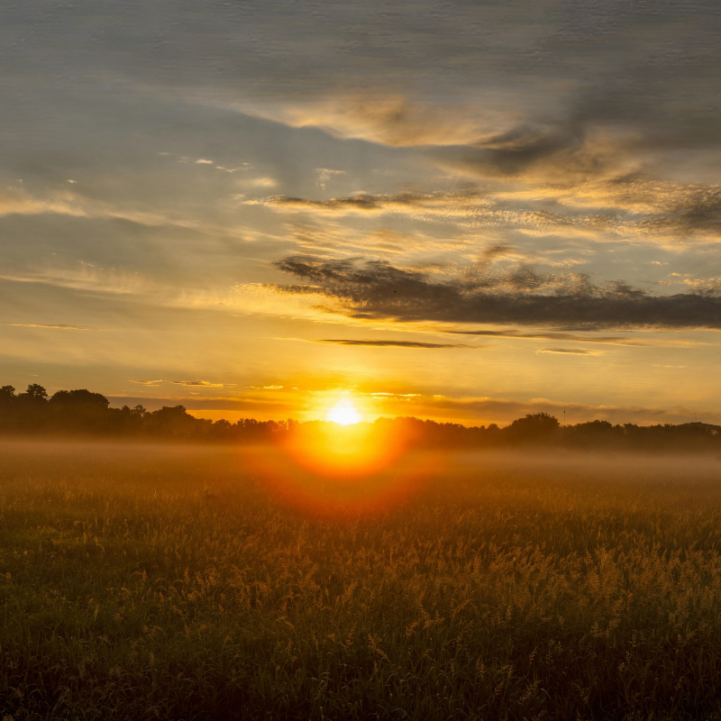
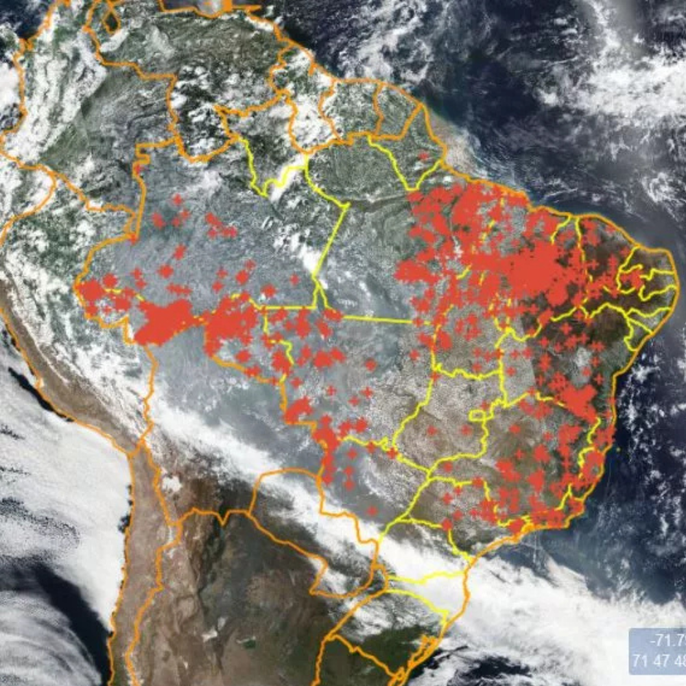
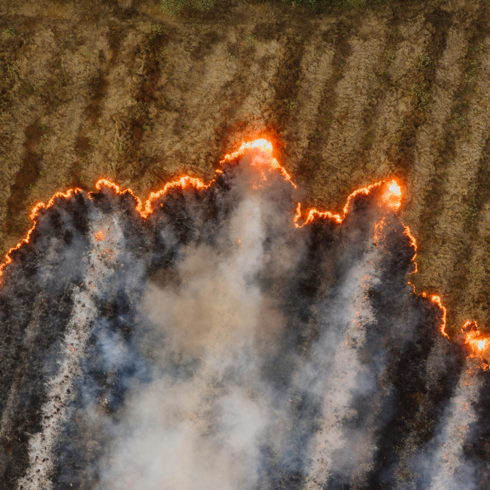

Informação certa,
na hora certa
A Floratech transforma dados reais de satélites do INPE em alertas simples e acessíveis para o produtor rural. Saiba o risco de queimadas na sua região antes que seja tarde.
Para quem trabalha na terra, monitorar o clima não é opcional — é essencial.
Ver painel de risco

Dados reais do INPE na palma da sua mão
O Instituto Nacional de Pesquisas Espaciais (INPE) monitora queimadas e condições climáticas em todo o Brasil via satélite. A Floratech conecta esses dados públicos a uma interface simples, sem jargões técnicos.
Basta selecionar seu estado e receber instantaneamente: focos de incêndio, dias sem chuva, precipitação acumulada e um score de risco claro — Baixo, Médio ou Alto.
Como funciona
O produtor rural merece informação de qualidade
Queimadas custam bilhões ao agronegócio brasileiro todos os anos. Pequenos e médios produtores raramente têm acesso a sistemas de monitoramento profissional — e pagam o preço com colheitas perdidas.
A Floratech é gratuita, não exige instalação e funciona em qualquer dispositivo. Nossa missão é democratizar o acesso à informação climática no campo.